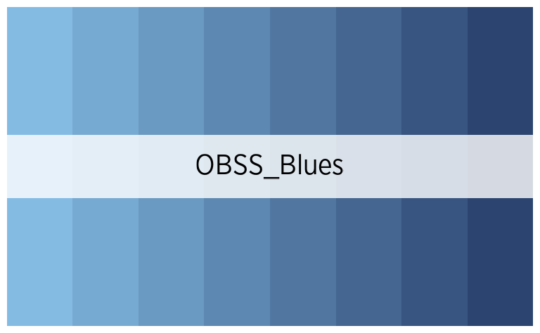
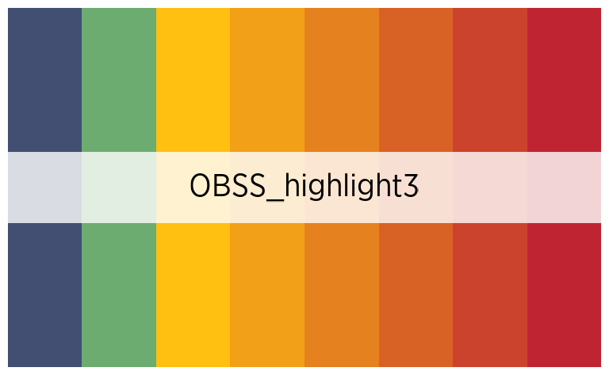
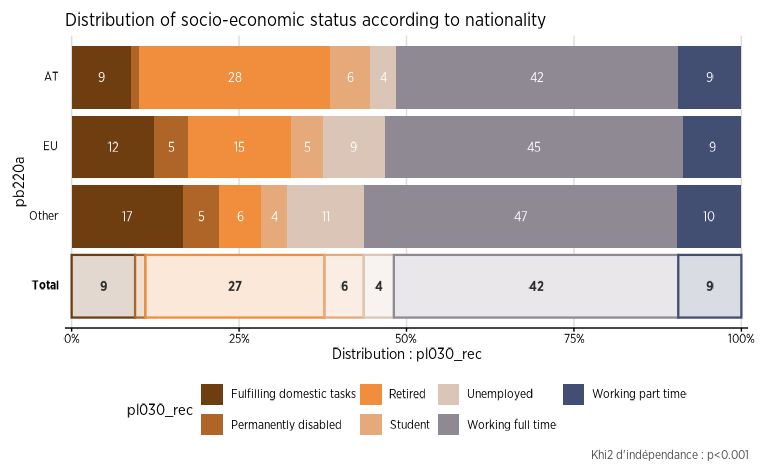

Couleurs pour l'Observatoire de la Santé et du Social
Source:vignettes/articles/Obss_colors.Rmd
Obss_colors.RmdNous avons créé des palettes spécifiques pour les chercheurs de l’Observatoire de la Santé et du Social. Celles-ci suivent le code couleur de Vivalis, et ont été pensées pour différentes utilisations.
Utilisation
Pour utiliser ces palettes dans les différentes fonctions de
fonctionr, il suffit d’indiquer celle de votre préférence
(les noms des palettes de couleur sont listés plus loin sur cette page)
dans l’argument pal :
test_palette_OBSS <- distrib_group_d(
eusilc,
group = db040,
quali_var = pl030_rec,
weights = rb050,
font = "Gotham Narrow",
pal = "OBSS",
title = "Distribution of socio-economic status according to region",
ylab = "",
legend_lab = "Status",
caption = "Bron : EU-SILC",
)
test_palette_OBSS$graph
Les codes hexadécimaux des différentes palettes peuvent aussi être
appelés avec la fonction official_pal(), pour les utiliser
à l’extérieur de fonctionr. L’argument n
permet d’indiquer combien de couleurs sont nécessaires, et la fonction
s’occupe de créer automatiquement un dégradé comprenant ce nombre de
couleurs. L’argument show_pal = T permet quant à lui
d’afficher graphiquement les palettes.
official_pal(inst = "OBSS", n = 8)
#> [1] "#E65362" "#EF7C3B" "#F8A514" "#BEB135" "#63AE7A" "#2A9FA0" "#367689"
#> [8] "#434E73"
official_pal(inst = "OBSS", n = 8, show_pal = T)
Il est également possible de connaître toutes les palettes
disponibles en exécutant la fonction official_pal() avec
comme argument list_pal_names = T :
official_pal(list_pal_names = T)
#> [1] "Vivalis" "OBSS" "OBSS_alt1" "OBSS_alt2"
#> [5] "OBSS_alt3" "OBSS_Relax" "OBSS_Autumn" "OBSS_Sweet"
#> [9] "OBSS_Spring" "OBSS_Candy" "OBSS_Greens" "OBSS_Sea"
#> [13] "OBSS_Sunset" "OBSS_Purples" "OBSS_Blues" "OBSS_Brown"
#> [17] "OBSS_div_mid1" "OBSS_div_mid2" "OBSS_div_mid3" "OBSS_div_mid4"
#> [21] "OBSS_div_bi1" "OBSS_div_bi2" "OBSS_div_bi3" "OBSS_div_bi4"
#> [25] "OBSS_highlight1" "OBSS_highlight2" "OBSS_highlight3" "IBSA"
#> [29] "ULB"Les palettes
Palettes qualitatives
official_pal("OBSS", 8, show_pal = T)
official_pal("OBSS_alt1", 8, show_pal = T)
official_pal("OBSS_alt2", 7, show_pal = T)
official_pal("OBSS_alt3", 8, show_pal = T)
official_pal("OBSS_Autumn", 8, show_pal = T)
official_pal("OBSS_Relax", 7, show_pal = T)
official_pal("OBSS_Spring", 7, show_pal = T)
official_pal("OBSS_Sweet", 7, show_pal = T)Palettes continues
official_pal("OBSS_Greens", 8, show_pal = T)
official_pal("OBSS_Sunset", 8, show_pal = T)
official_pal("OBSS_Sea", 8, show_pal = T)
official_pal("OBSS_Candy", 8, show_pal = T)
official_pal("OBSS_Purples", 8, show_pal = T)
official_pal("OBSS_Blues", 8, show_pal = T)
official_pal("OBSS_Brown", 8, show_pal = T)
Palettes divergentes
Avec un point central
Attention, ces palettes n’affichent le point central que si le nombre de couleur est impair !
official_pal("OBSS_div_mid1", 7, show_pal = T)
official_pal("OBSS_div_mid2", 7, show_pal = T)
official_pal("OBSS_div_mid3", 7, show_pal = T)
official_pal("OBSS_div_mid4", 7, show_pal = T)
Sans point central
Attention, ces palettes ne sont symétriques que si le nombre de couleur est pair !
official_pal("OBSS_div_bi1", 8, show_pal = T)
official_pal("OBSS_div_bi2", 8, show_pal = T)
official_pal("OBSS_div_bi3", 8, show_pal = T)
official_pal("OBSS_div_bi4", 8, show_pal = T)Palettes avec emphase
Il s’agit de palettes de couleur mettant en opposition la première, ou les deux premières catégories, avec toutes les autres :
official_pal("OBSS_highlight1", 8, show_pal = T)
official_pal("OBSS_highlight2", 8, show_pal = T)
official_pal("OBSS_highlight3", 8, show_pal = T)
Palettes d’autres institutions
official_pal("IBSA", 4, show_pal = T)
official_pal("ULB", 6, show_pal = T)
Altération des palettes
Il est possible de désaturer, éclaircir ou foncer les palettes, avec
les arguments desaturate, lighten et
darken, à la fois dans les fonctions de description de
données de fonctionr et dans la fonction
official_pal().
official_pal("OBSS", 8, show_pal = T)
official_pal("OBSS", 8, desaturate = .4, show_pal = T)
official_pal("OBSS", 8, lighten = .4, show_pal = T)
official_pal("OBSS", 8, darken = .4, show_pal = T)Exemples de graphiques
distrib_income_2 <- distrib_group_c(
eusilc,
db040,
(py010n + py050n) / 12,
filter_exp = pl030 == 2,
limits = c(-500, 3000),
show_mid_point = F,
show_value = F,
show_ci_errorbar = F,
show_moustache = F,
pal = official_pal(inst = "OBSS_Purples", n = 2, direction = -1),
alpha = .8,
font = "Gotham Narrow",
title = "Income from wage, part time workers by region"
)
distrib_income_2$graph
eusilc_dist_group_d <- distrib_group_d(
eusilc,
group = db040,
quali_var = pl030_rec,
filter_exp = age > 12,
pal = "OBSS_alt1",
font = "Gotham Narrow",
title = "Distribution of socio-economic status according to region"
)
eusilc_dist_group_d$graph
eusilc_many_mean_group <- many_mean_group(
eusilc,
group = rb090,
list_vars = c(py010n, py050n, py090n),
list_vars_lab = c("salaires", "revenus d'une activité indépendant", "allocation de chômage"),
pal = "OBSS_Greens",
unit = "€",
font = "Gotham Narrow",
title = "Income from wage, independant worker and unemployement benefits by sex"
)
eusilc_many_mean_group$graph
eusilc_dist_group_d2 <- distrib_group_d(
eusilc,
weights = rb050,
group = pb220a,
quali_var = pl030_rec,
pal = "OBSS_Autumn",
font = "Gotham Narrow",
title = "Distribution of socio-economic status according to nationality"
)
eusilc_dist_group_d2$graph
eusilc_prop_group <- prop_group(
eusilc,
group = rb090,
prop_exp = pl030_rec == "Working part time",
group.fill = db040,
show_value = F,
pal = "OBSS_alt2",
font = "Gotham Narrow",
title = "Proportion of individuals working part time by region and sex"
)
eusilc_prop_group$graph